“阅芽计划”小程序面向0-6岁少儿家庭，提供绘本推荐、早期阅读指导、阅读记录、亲子互动游戏等服务，助力儿童阅读习惯培养。
功能比较单一，仅覆盖少数核心需求，处于MVP阶段，后续将持续迭代优化。
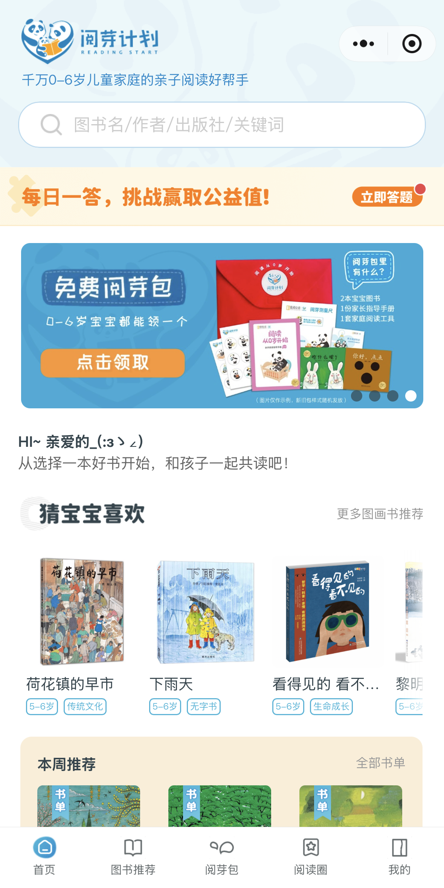
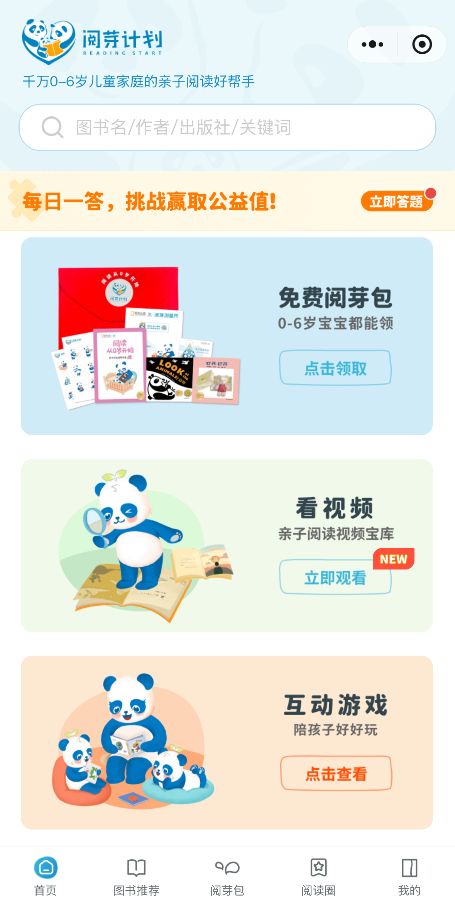
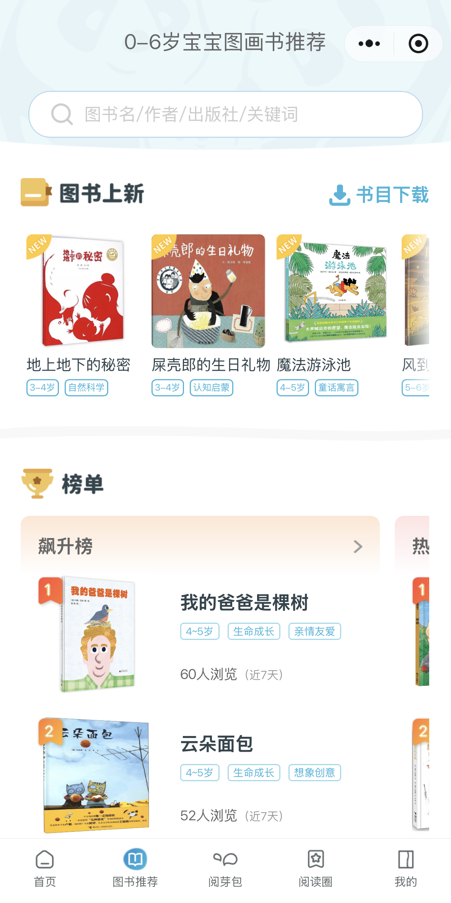
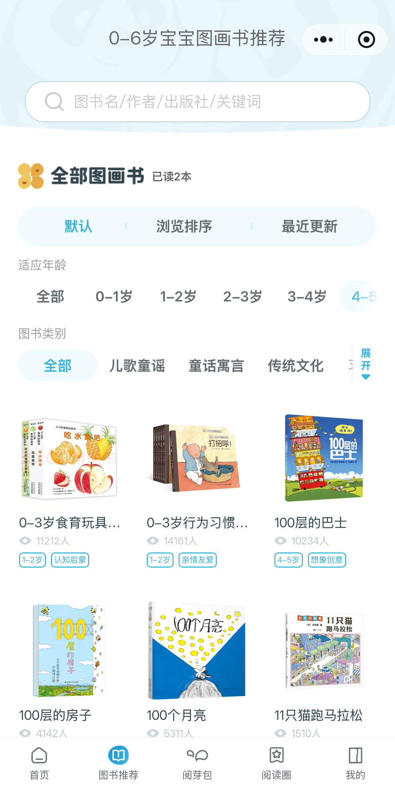
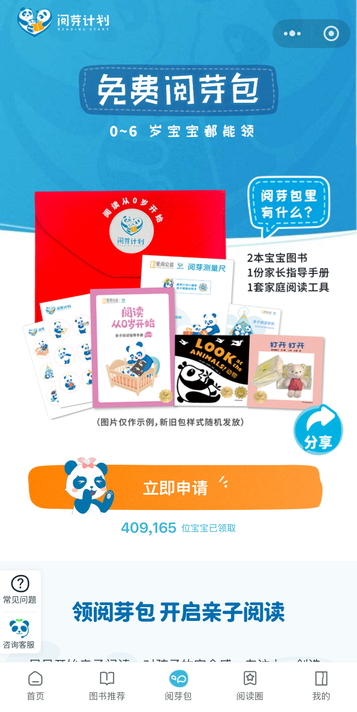
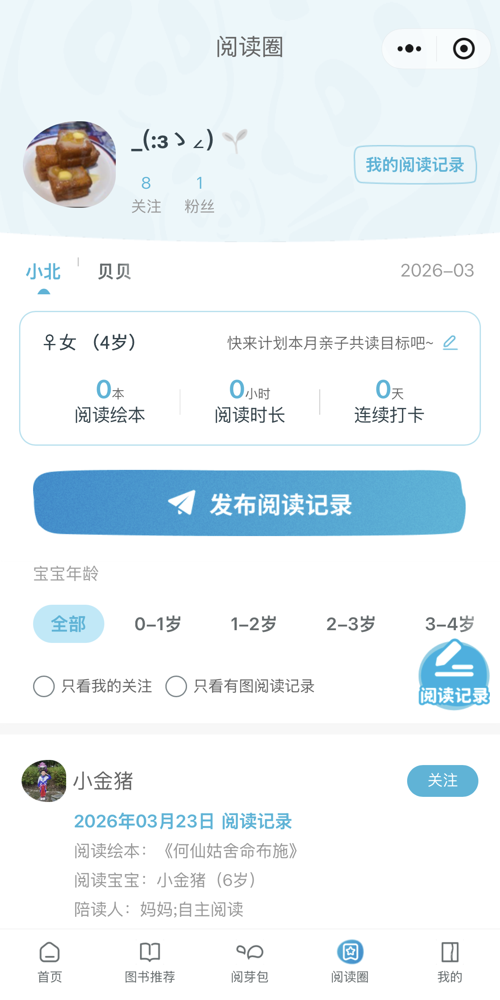
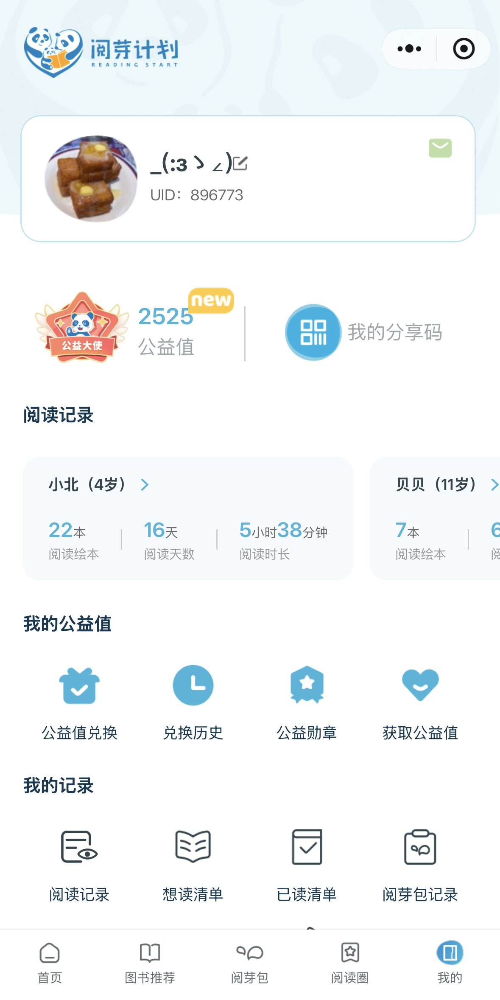
阅芽计划小程序部分页面展示
结合用户反馈、数据统计、业务需求，确定每次迭代核心需求，接手前仅有读前板块，接手后完成“读前-读中-读后”闭环：
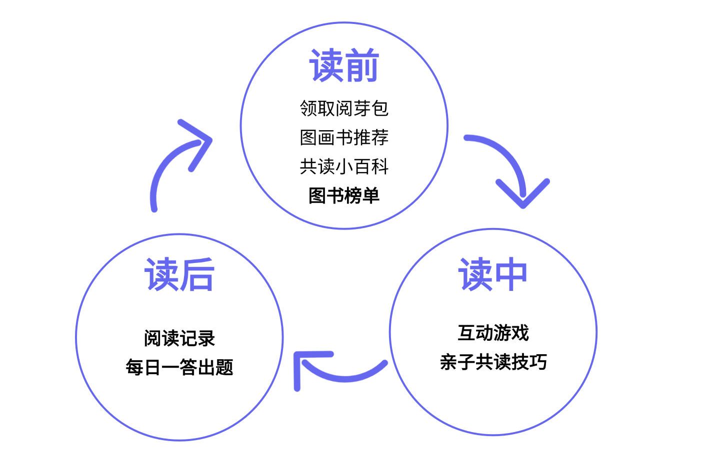
加粗为在职期间新增功能
23年6月
新增每日一答答题记录、活动板块、公益值兑换板块
23年10月
新增榜单（算法更新）、图书标签，改版我的记录页面
24年3月
新增亲子共读节报名入口、阅读圈、互动游戏板块
24年4月
新增爱阅益选板块
24年8月
每日一答新增“我也要出题”功能，首页新增搜索，优化阅读圈个人数据
24年12月
新增2024年度报告、首页banner、阅读圈我的阅读清单
统筹小程序整体运营策略的制定与落地：
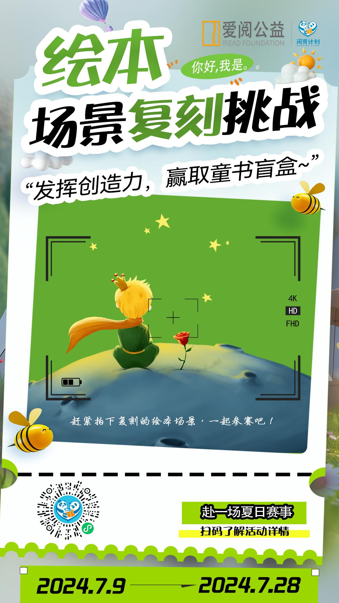
绘本场景复刻作品征集
创作者讲故事直播
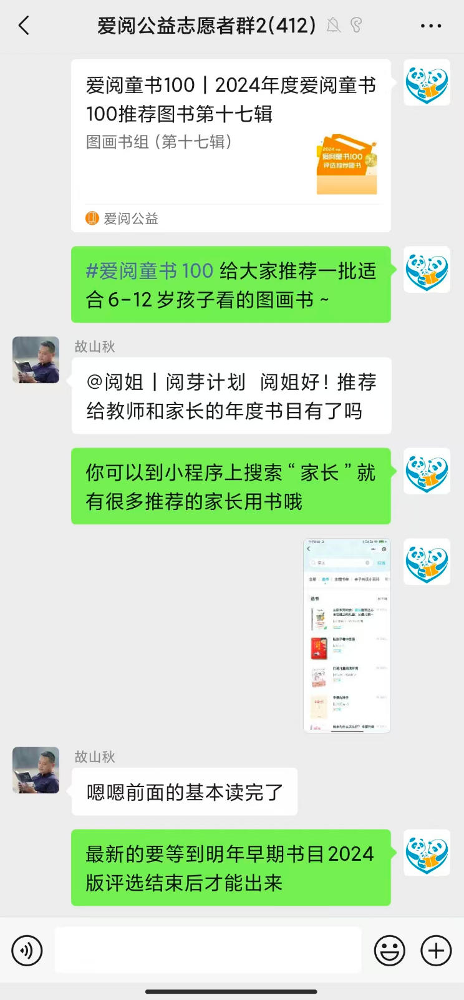
社群运营
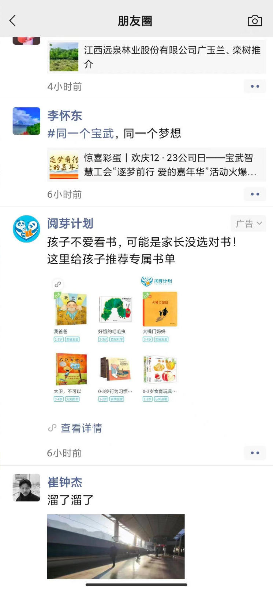
朋友圈广告
30w+
1w+
90%+
创3年新高
（亲子共读小百科同比增长283%
每日一答同比增长254%）
整理用户反馈，输出PRD文档，明确功能优化细节
主导页面原型设计，对接UI设计师确定视觉与交互逻辑
协调开发、测试团队，明确排期，解决需求争议
参与上线前测试，确保功能符合需求预期
每日深度使用小程序，及时发现bug并反馈至开发团队
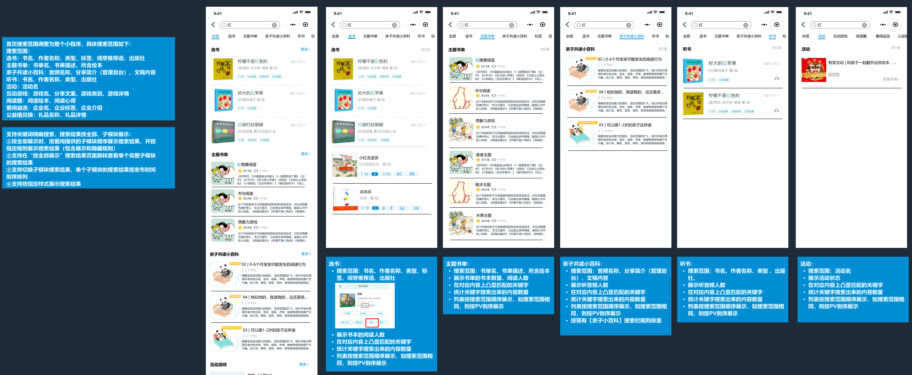
部分原型图